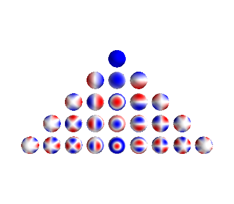
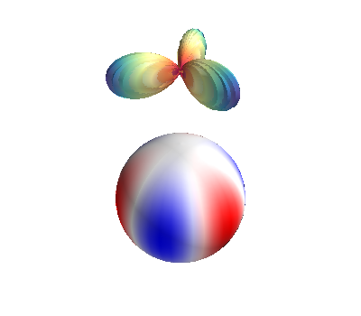
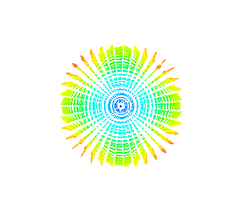
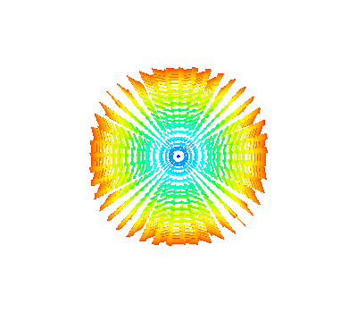
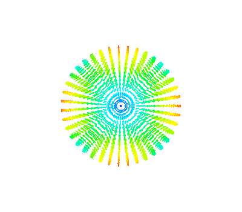
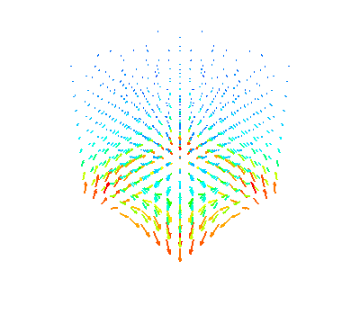
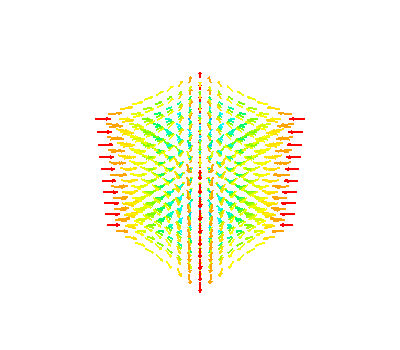

Note
Click here to download the full example code
Example of spherical harmonics tools and visualization¶
import numpy as np
from mayavi import mlab
import matplotlib.pyplot as plt
from bfieldtools.sphtools import SphBasis
from bfieldtools import sphtools
# Create basis object for plotting, evaluation of inner products etc.
sph = SphBasis(40)
Plot Spherical harmonics Ylms on the sphere Plot Ylms up to l = 4
mlab.figure(bgcolor=(1, 1, 1))
obj = sphtools.plotYlms(sph, lmax=4)
# Plot Ylm with l=3, m=3
mlab.figure(bgcolor=(1, 1, 1))
obj = sphtools.plotYlm(sph, l=3, m=3)
- 
- 
Plot vector spherical harmonics Vlms / Wlms / Xlms on the sphere
# Plot Vlm with l=2, m=2
mlab.figure(bgcolor=(1, 1, 1))
obj = sphtools.plotVlm(sph, l=2, m=2)
obj.scene.z_plus_view()
# Plot Wlm with the same order and degree, l=2, m=2
mlab.figure(bgcolor=(1, 1, 1))
obj = sphtools.plotWlm(sph, l=2, m=2)
obj.scene.z_plus_view()
# Plot Xlm with the same order and degree, l=2, m=2
mlab.figure(bgcolor=(1, 1, 1))
obj = sphtools.plotXlm(sph, l=2, m=2)
obj.scene.z_plus_view()
- 
- 
- 
Plot fields of vector spherical harmonics Vlms / Wlms on a volume
# Plot BVlm with l=2, m=2
offset = np.array((0, 0, 3)) # add offset due to divergence in origin
mlab.figure(bgcolor=(1, 1, 1))
obj = sphtools.plotBVlm_volume(sph, l=2, m=2, lim=1, Np=10, offset=offset)
# Plot BWlm with l=2, m=2
offset = np.array((0, 0, 0)) # include origin
mlab.figure(bgcolor=(1, 1, 1))
obj = sphtools.plotBWlm_volume(sph, l=2, m=2, lim=1, Np=10, offset=offset)
- 
- 
Test inner products in quadrature points defined in sph-object
Ylm1 = sphtools.ylm(2, 1, sph.sqp[:, 1], sph.sqp[:, 2])
Ylm2 = sphtools.ylm(2, 0, sph.sqp[:, 1], sph.sqp[:, 2])
print(
"Inner product between Ylm_20 and Ylm_21 is %f"
% sph.innerproduct(Ylm1[:, None], Ylm2[:, None])
)
print(
"Inner product between Ylm_20 and Ylm_20 is %f"
% sph.innerproduct(Ylm2[:, None], Ylm2[:, None])
)
Vlm1 = sphtools.Vlm(1, 0, sph.sqp[:, 1], sph.sqp[:, 2])
Vlm2 = sphtools.Vlm(2, 0, sph.sqp[:, 1], sph.sqp[:, 2])
print("Inner product between V_10 and V_20 is %f" % sph.innerproduct(Vlm1, Vlm2))
print("Inner product between V_10 and V_10 is %f" % sph.innerproduct(Vlm1, Vlm1))
Wlm1 = sphtools.Wlm(1, 0, sph.sqp[:, 1], sph.sqp[:, 2])
Wlm2 = sphtools.Wlm(2, 0, sph.sqp[:, 1], sph.sqp[:, 2])
print("Inner product between W_10 and W_20 is %f" % sph.innerproduct(Wlm1, Wlm2))
print("Inner product between W_10 and W_10 is %f" % sph.innerproduct(Wlm1, Wlm1))
Xlm1 = sphtools.Xlm(1, 0, sph.sqp[:, 1], sph.sqp[:, 2])
Xlm2 = sphtools.Xlm(2, 0, sph.sqp[:, 1], sph.sqp[:, 2])
print("Inner product between X_10 and X_20 is %f" % sph.innerproduct(Xlm1, Xlm2))
print("Inner product between X_10 and X_10 is %f" % sph.innerproduct(Xlm1, Xlm1))
print("Inner product between W_10 and V_10 is %f" % sph.innerproduct(Wlm1, Vlm1))
print("Inner product between X_10 and V_10 is %f" % sph.innerproduct(Xlm1, Vlm1))
print("Inner product between X_10 and W_10 is %f" % sph.innerproduct(Xlm1, Vlm1))
Out:
Inner product between Ylm_20 and Ylm_21 is 0.000000
Inner product between Ylm_20 and Ylm_20 is 1.000000
Inner product between V_10 and V_20 is 0.000000
Inner product between V_10 and V_10 is 1.000000
Inner product between W_10 and W_20 is -0.000000
Inner product between W_10 and W_10 is 1.000000
Inner product between X_10 and X_20 is -0.000000
Inner product between X_10 and X_10 is 1.000000
Inner product between W_10 and V_10 is 0.000000
Inner product between X_10 and V_10 is 0.000000
Inner product between X_10 and W_10 is 0.000000
Simple example of the calculation of sph spectrum of magnetic field defined on the sphere using the inner product.
# define homogeneous magnetic field along z-axis
B = np.zeros(sph.sqp.shape)
B[:, 2] = sph.qp.points[:, 0] / np.max(sph.qp.points[:, 0])
# add noise
B += 0.1 * np.random.randn(B.shape[0], B.shape[1])
B = sphtools.cartvec2sph(sph.sqp, B) # transform to spherical coordinates
coeffs = sph.avsphspectra(B, 7) # calculate spectra of the r**l terms
# Plot the spectra
plt.figure()
plt.semilogy(coeffs ** 2)
Out:
[<matplotlib.lines.Line2D object at 0x7fc4c8a62950>]
Total running time of the script: ( 0 minutes 6.183 seconds)
Estimated memory usage: 9 MB